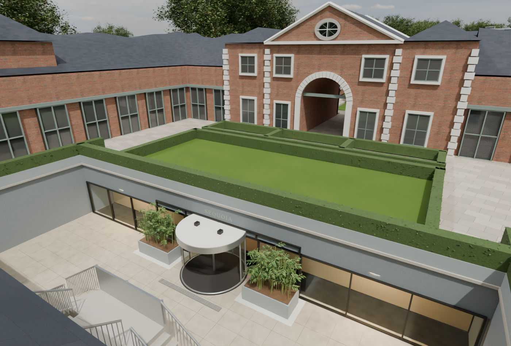
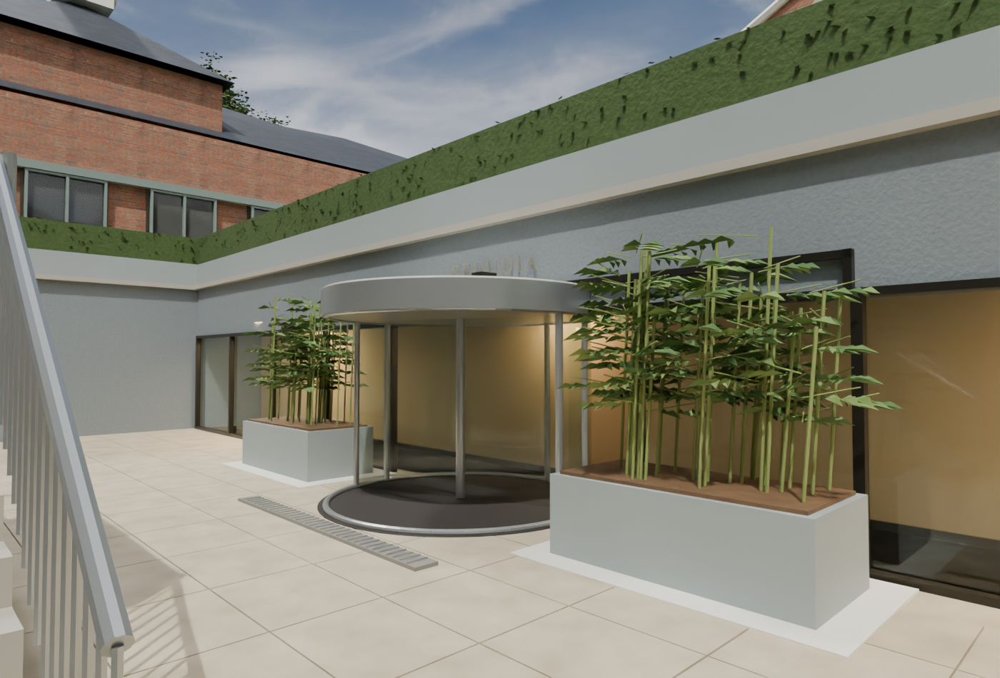
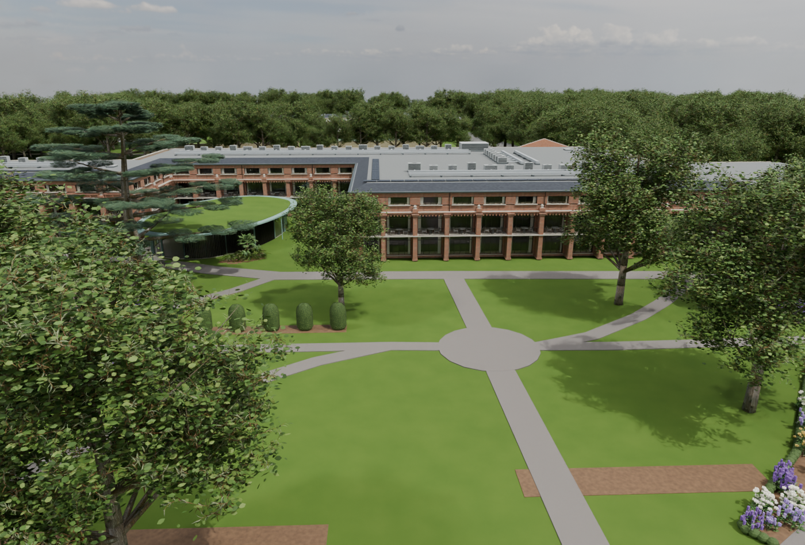
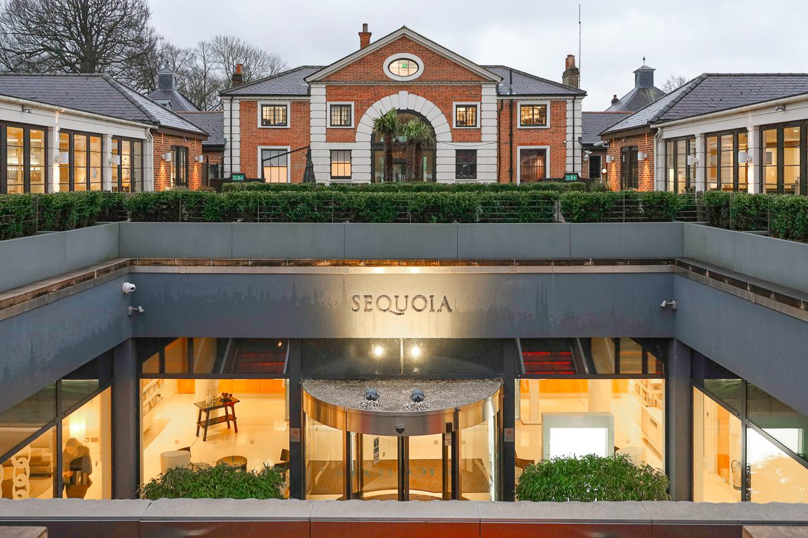
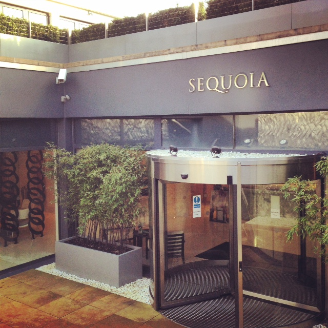
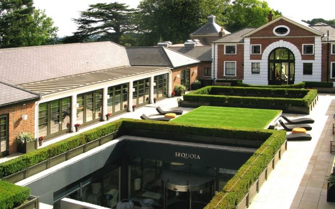

V27 adds the sunken spa entrance, revolving glass door, stair and hedged courtyard. Overlapping ground surfaces have been trimmed while retaining existing path routes and heights. Dimensions remain photographic estimates.






Earlier V26 reception and estate renders — historical images, before the Sequoia and ground repairs.